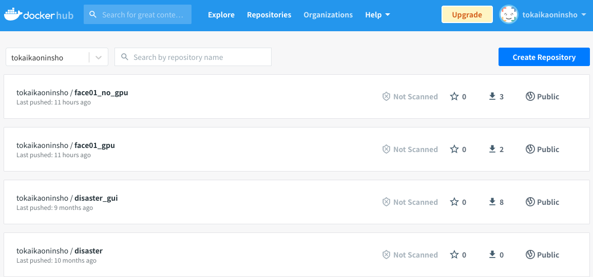

To install Docker
See here.
Pull Docker image
*The easiest way to use Docker is to pull the image.*

NOTE (IMPORTANT!)
If you are using a PC with NVIDIA GPU installed, the Docker Image you should pull is face01_gpu:1.4.10.
If not, the Docker Image you should pull is face01_no_gpu:1.4.10.
When using face01_gpu:1.4.10
First, Check if GPU is available.
lspci | grep -i nvidia
Make sure nvidia-docker is installed.
docker run --gpus all --rm nvidia/cuda nvidia-smi
(To add NVIDIA GPU support to Docker, install the NVIDIA Container Toolkit. nvidia-container-runtime is only available on Linux. See https://www.tensorflow.org/install/docker#gpu_support [ja])
Reference
NVIDIA Container Toolkit
# Download Docker Image
docker pull tokaikaoninsho/face01_gpu:1.4.10
# Check `REPOSITORY`, `TAG`, and `IMAGE ID` of the downloaded Docker Image. (IMPORTANT!)
docker images
# Run Docker
docker run --rm -it \
--gpus all -e DISPLAY=$DISPLAY \
-v /tmp/.X11-unix/:/tmp/.X11-unix: tokaikaoninsho/face01_gpu:1.4.10
NOTE
If you get an error as a result of entering the above command, try the following command.
docker run --rm -it \
--gpus all -e DISPLAY=$DISPLAY \
--device /dev/video0:/dev/video0:mwr \
-v /tmp/.X11-unix/:/tmp/.X11-unix: tokaikaoninsho/face01_gpu:1.4.10
Don’t forget activate the Python virtual environment (activate venv).
# Activate venv (IMPORTANT!)
. bin/activate
Let’s try simple.py in example folder.
python example/simple.py
When using face01_no_gpu:1.4.10
# Download Docker Image
docker pull tokaikaoninsho/face01_no_gpu:1.4.10
# Check `REPOSITORY`, `TAG`, and `IMAGE ID` of the downloaded Docker Image. (IMPORTANT!)
docker images
# Run Docker
docker run --rm -it -v /tmp/.X11-unix/:/tmp/.X11-unix: tokaikaoninsho/face01_no_gpu:1.4.10
NOTE
If you get an error as a result of entering the above command, try the following command.
docker run --rm -it \
-e DISPLAY=$DISPLAY \
--device /dev/video0:/dev/video0:mwr \
-v /tmp/.X11-unix/:/tmp/.X11-unix: tokaikaoninsho/face01_no_gpu:1.4.10
Don’t forget activate the Python virtual environment (activate venv).
# Activate venv (IMPORTANT!)
. bin/activate
Let’s try simple.py in example folder.
python example/simple.py
Build Docker image
If you want to build the Docker Image yourself, See here.